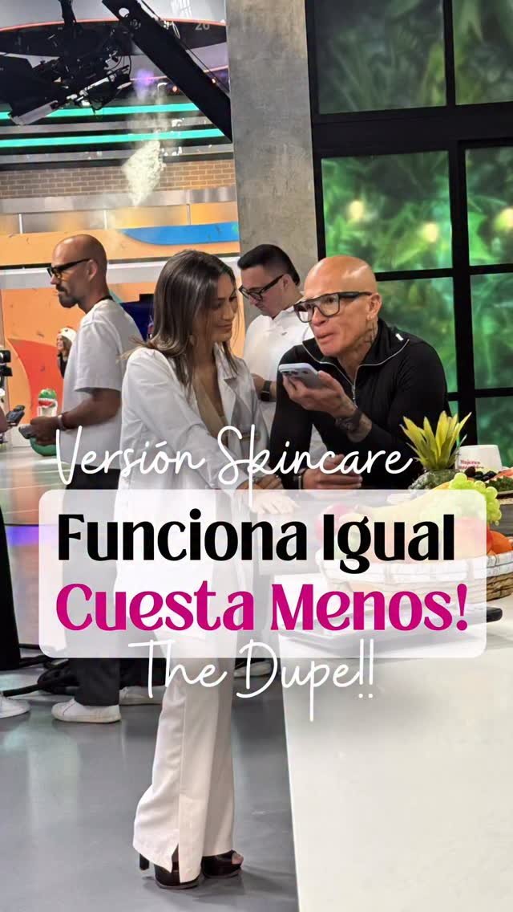
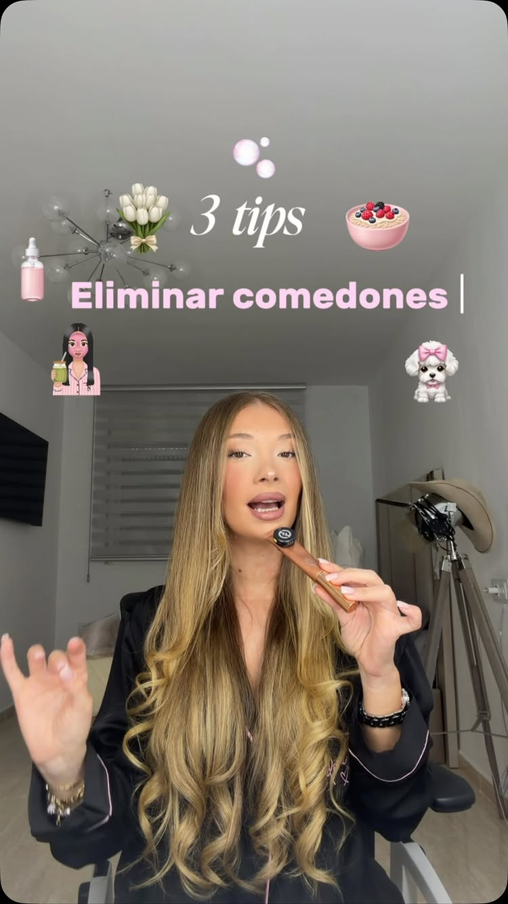
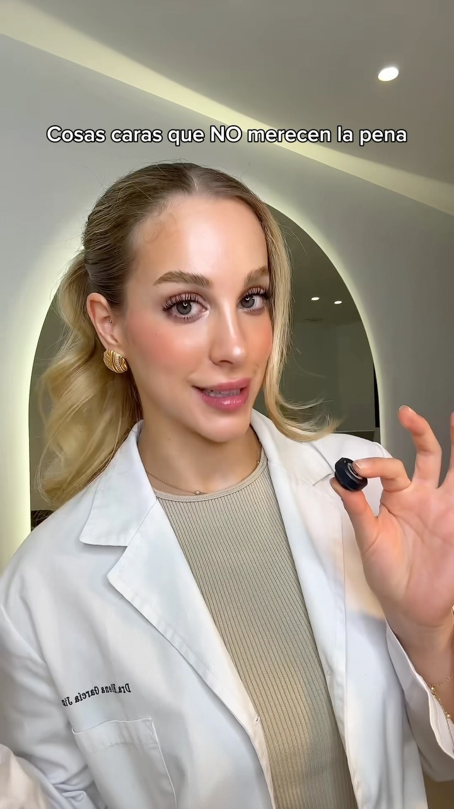
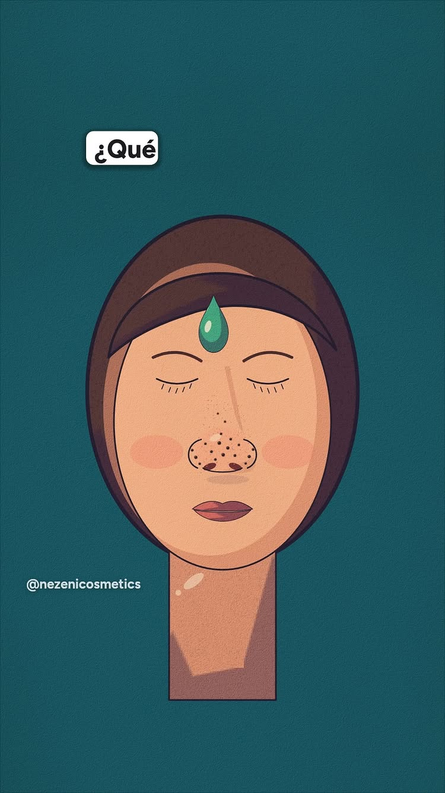
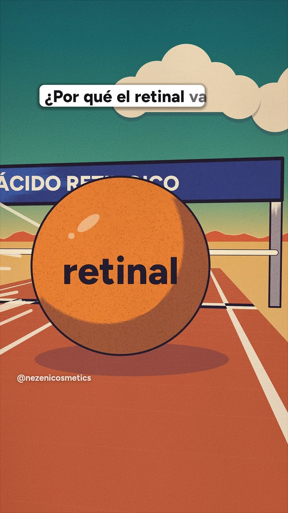

THE SKIN CLUB · PLANEACIÓN 8
Referencias, fuentes y producción
Paloma y Camila · revisión del 3 de noviembre de 2026 · fecha y locación de grabación por definir.
Abrir el teleprompter de Skin Club
Los seis guiones son borradores editables. La información científica se vincula junto a la afirmación correspondiente en cada guion; no forma parte del texto que deben leer.

R8-01 · PALOMA + CAMILA
Productos conocidos y opciones de Skin Club
Referencia de @karenlunafarmaceutica: comparación visual de un producto conocido con una alternativa de menor precio, seguida de una explicación breve.
Ver referencia · Abrir guion
Selección desarrollada
| Producto conocido | Skin Club | Base de la comparación |
|---|
| La Roche-Posay Hyalu B5 Sérum | Hydroglow sérum | Hidratación y ácido hialurónico. Hyalu B5 destaca vitamina B5; Hydroglow declara niacinamida y jojoba. No se acredita equivalencia de resultados. |
| Kiehl’s Rare Earth Mask | Oh Matcha | Mascarillas de arcilla orientadas al exceso de grasa. Oh Matcha declara matcha y varios ácidos. Las fórmulas y las indicaciones deben revisarse por separado. |
Fuentes de los productos
Candidatos adicionales conservados de la investigación
- The Ordinary Hyaluronic Acid 2% + B5 con ceramidas: la marca lo identifica como bestseller. Comparte categoría de hidratación con Hydroglow, pero destaca B5 y ceramidas. No se eligió para una promesa de ahorro sin precios mexicanos comparables.
- Vichy Minéral 89: candidato para contrastar fórmulas hidratantes. Identificar la presentación exacta; no confundirlo con el concentrado de fracciones probióticas.
Se distinguen productos comercialmente reconocibles de una tendencia vigente: no se verificaron métricas de viralidad mexicana para todos los candidatos.
Precios y grabación
El 3 de noviembre se observó Hydroglow a $799 MXN por una pieza y una promoción de dos por $799 en su página. Son condiciones distintas y pueden cambiar. El guion queda sin importes ni una promesa de ahorro; para añadir una comparación de precio, cotejar tienda, fecha, volumen y costo por mililitro de cada unidad.
Presentar dos parejas con cambios visuales rápidos y texturas auténticas. No atribuir a Skin Club resultados clínicos de los competidores ni afirmar superioridad por compartir ingredientes. El audio de esta referencia se revisó con transcripción local: GetTranscribe informó restricción de edad al intentar recuperarlo.

R8-02 · PALOMA EXPLICA / CAMILA DEMUESTRA
Las bolitas que se notan con el maquillaje
Referencia de @carmenn.cs: tres consejos, primeros planos de textura, aplicación de mascarilla y sérum e ilustración del poro. Audio cotejado con GetTranscribe.
Ver referencia · Abrir guion
Ajustes de la adaptación
- La entrada parte de textura reconocible; una imagen no basta para diagnosticar cualquier bolita.
- La referencia recomienda salicílico y después desaconseja exfoliar. Se aclara la diferencia: el salicílico es un exfoliante químico; el guion desaconseja tallar y exprimir.
- Deep Cleanse piel grasa es de enjuague. No se traslada automáticamente a este producto la frecuencia de un sérum que permanece sobre la piel.
- Oh Matcha y Deep Cleanse se muestran en tomas independientes; la pieza no prescribe combinarlos en una misma sesión.
Fuentes y límites
Mostrar piel real y contar con permiso o licencia. No convertir imágenes ajenas en un antes/después de Skin Club ni editar la desaparición de textura.

R8-03 · CAMILA / PREGUNTAS DE PALOMA
Compras de skincare que puedes ahorrarte
Referencia de @draelenagarcia: opinión directa sobre compras y procedimientos en los que cuestiona el gasto. Audio cotejado con GetTranscribe.
Ver referencia · Abrir guion
Se conserva el borrador desarrollado con Dante sobre limpiador, sérums redundantes y exceso de pasos. La referencia también aborda moléculas tópicas, herramientas faciales, parches, dispositivos y mesoterapia; sus afirmaciones médicas no se incorporan ni se presentan como verificadas.
Fuentes y producción
Empezar con una mesa llena de productos e ir seleccionando conforme responde Camila. Paloma pregunta fuera de cámara. Mostrar protector solar sin atribuirlo a Skin Club. No presentar marcas competidoras como basura ni indicar suspender tratamientos prescritos.

R8-04 · CAMILA + PALOMA · PROPUESTA PARA REVISIÓN
Ya me lavé la cara… ¿por qué siguen esos puntitos?
Audio cotejado con GetTranscribe (309089). La referencia enumera salicílico, retinal y niacinamida; la adaptación propone una escena frente al espejo.
Ver referencia · Abrir propuesta
- Los puntitos visibles no se diagnostican como puntos negros: algunos pueden ser filamentos sebáceos normales.
- La niacinamida no se presenta como tratamiento equivalente al salicílico ni como eliminadora de puntos negros.
- Se omite retinal: la evidencia de retinoides concretos no se traslada automáticamente a cualquier cosmético de vitamina A.
- No se vincula el efecto de un ingrediente con un producto terminado sin respaldo específico.
Fuentes
Nota editorial: R7-12, sobre Demodex, se retiró de la lista de grabación. Se eliminó el texto de lectura que asociaba su presencia con falta de limpieza y recomendaba doble limpieza como respuesta.
R8-05 · CAMILA + PALOMA · PROPUESTA PARA REVISIÓN
¿La verde o la azul? Probamos las mascarillas
Audio cotejado con GetTranscribe (309094). La referencia reseña Fully Green Tomato Clay Mask Cleanser. Se adapta el recorrido de presentación, textura, aplicación y retiro para Oh Matcha y Feelin’ Fresh, ambas de arcilla.
Ver referencia · Abrir propuesta
- Mostrar ambas fórmulas sin llamarlas arcilla frente a matcha: las dos contienen caolín.
- Respetar los diez minutos que indican sus fichas. El uso de tres minutos y la función limpiadora de Fully no se trasladan a Skin Club.
- Grabar reacciones reales y no escribir testimonios de transformación. Mantener iluminación, textura y distancia; no fabricar antes y después.
- Feelin’ Fresh tiene una inconsistencia editorial: título para piel seca-normal, descripción para todo tipo e imagen para mixta. Confirmar envase vigente antes de grabar; no prometer tolerancia universal.
Fuentes y alcance

R8-06 · ANIMACIÓN + VOZ EN OFF · PROPUESTA PARA REVISIÓN
¿Por qué comparan la Vigna con el retinol?
Audio cotejado con GetTranscribe (309095) y fotogramas revisados. Se propone una animación original de células y extracto, con narración y subtítulos. Guion y storyboard preparados; audio y video por producir.
Ver referencia · Abrir guion y storyboard
- Nombre correcto: Vigna aconitifolia, extracto de semillas. No es una vid ni otro paso de la cadena de vitamina A.
- Las observaciones sobre renovación y colágeno explican la comparación comercial. No demuestran un mecanismo idéntico o una sustitución clínica de retinol o retinal.
- La animación distingue la cadena retinoide de las observaciones del proveedor. Evitar dibujar receptores compartidos o porcentajes de equivalencia sin respaldo.
- Hydroglow de noche declara SPB LS 9793. Confirmar documentación de esa materia prima para ampliar claims; no transferir resultados de otras fórmulas.
Fuentes y límites
No se promete ausencia de irritación ni seguridad por origen vegetal. La locución requiere seleccionar una voz propia o de biblioteca; no se ha identificado la voz exacta de la referencia.
Rutas creativas para ampliar la planeación
- Enséñame cómo lo usas: una demuestra y la otra pregunta; verificar antes el modo de uso del producto.
- Decisiones cotidianas: el público elige entre opciones antes de escuchar la explicación.
- Comentarios reales: responder dudas observadas en la cuenta, sin inventar preguntas de clientas.
Estas rutas son ideas editoriales adicionales; no son guiones terminados ni entregables extra ya acordados.